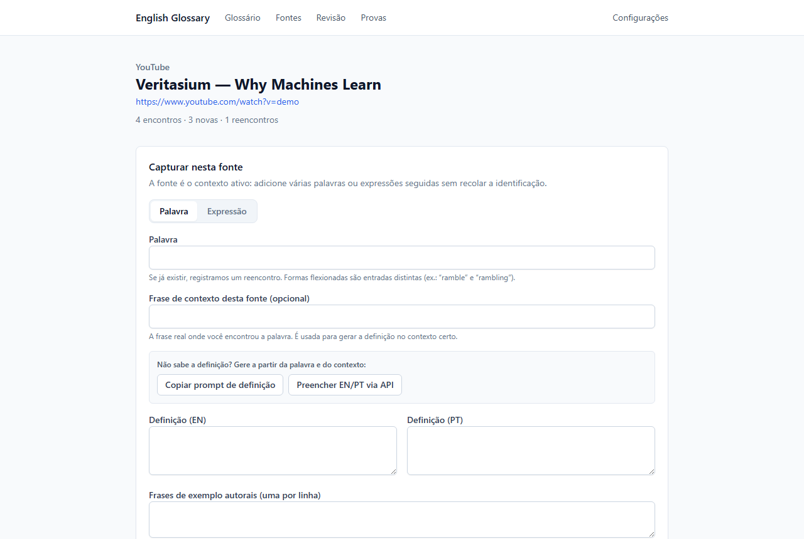
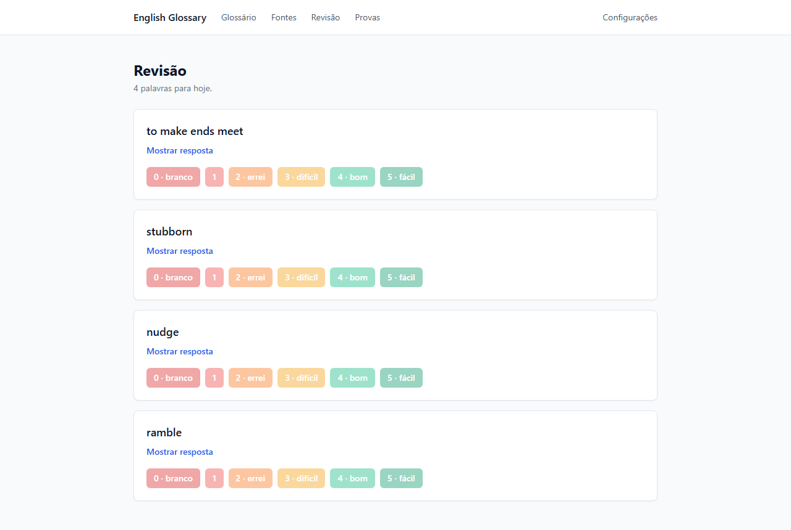
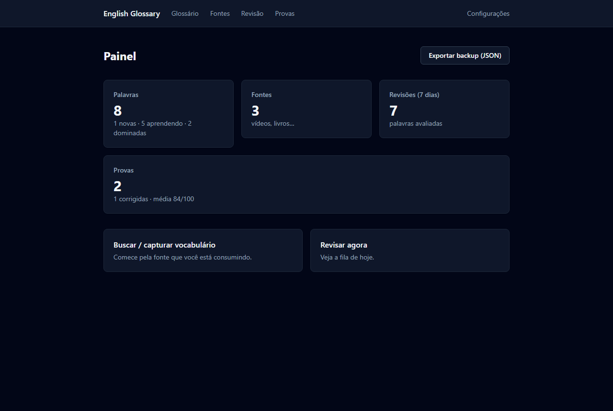

Um método, quatro passos
-
Registre a fonte
O vídeo do YouTube, o livro, o podcast. O vocabulário nasce de onde você realmente encontrou o inglês.
-
Capture com contexto
Salve a palavra ou expressão junto com a frase original. Reencontrou em outra fonte? O app registra o reencontro.
-
Revise no ritmo certo
A repetição espaçada (SM-2) monta sua fila do dia. Você avalia o quanto lembra; o app agenda a próxima revisão.
-
Prove que aprendeu
Gere provas do seu próprio vocabulário, responda e receba correção com nota — os erros voltam para a fila.
Feito para o dia a dia do estudo

Capture sem sair do flow
Abra a fonte, digite a palavra e a frase em que ela apareceu. Não sabe a definição? O app gera um prompt pronto — ou preenche via IA, se você configurar sua chave.

A fila de hoje, e só a de hoje
Nada de listas infinitas. O algoritmo decide o que precisa ser revisto agora; você responde de 0 a 5 e segue o dia.

Claro, escuro ou como o Windows mandar
Tema completo nos dois modos — escolha nas Configurações ou deixe acompanhar o sistema.
Seu caderno, suas regras
- 100% offline
- Tudo funciona sem internet. Só os recursos opcionais de IA precisam de conexão.
- Dados só no seu PC
- Nada de nuvem nem conta: o banco fica no seu computador, com backup em um arquivo JSON que você guarda onde quiser.
- IA opcional, chave sua
- Definições e correções automáticas via API da Anthropic — se e quando você colar a sua própria chave nas Configurações.
- Atualiza sozinho
- Instalou uma vez, acabou: o app verifica novas versões ao abrir e se atualiza sem você voltar aqui.
Perguntas frequentes
O Windows mostrou um aviso azul ("O Windows protegeu o seu PC"). E agora?
É o SmartScreen, padrão para instaladores novos que ainda não têm assinatura digital paga. O download é seguro e o código é aberto. Para continuar:
- Clique em Mais informações;
- Clique em Executar assim mesmo.
Isso só acontece na primeira instalação — as atualizações automáticas não passam por esse aviso.
Onde ficam os meus dados?
Num banco SQLite local, em %APPDATA%\english-glossary\glossary.db. Desinstalar o app não apaga seus dados, e você pode exportar/restaurar tudo em JSON pela tela de Configurações.
Preciso pagar algo? Preciso de conta?
Não e não. O app é gratuito e não tem cadastro. O único custo possível é o uso opcional da IA, cobrado pela Anthropic direto na sua chave — que você mesmo cria e cola no app.
Como funcionam as atualizações?
Ao abrir, o app verifica silenciosamente se há versão nova nas releases do GitHub, baixa em segundo plano e pergunta se você quer reiniciar agora ou aplicar ao fechar. Sem internet, nada muda — ele simplesmente segue funcionando.
Quais os requisitos?
Windows 10 ou 11, 64 bits. Não precisa de permissão de administrador para instalar.